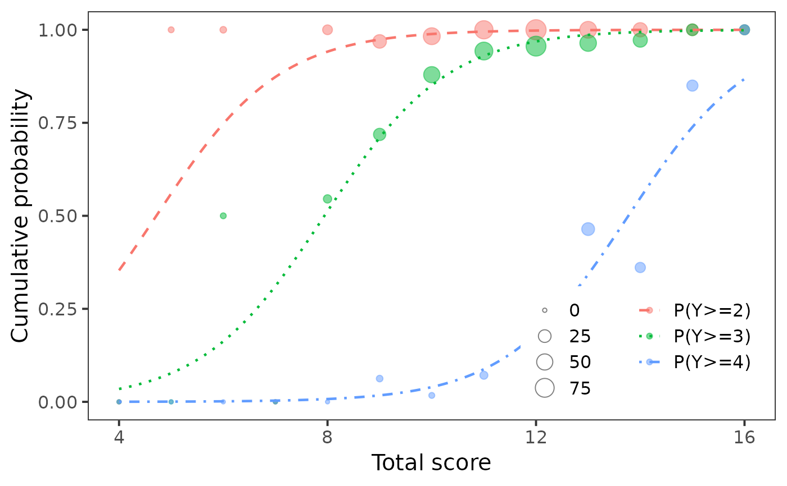
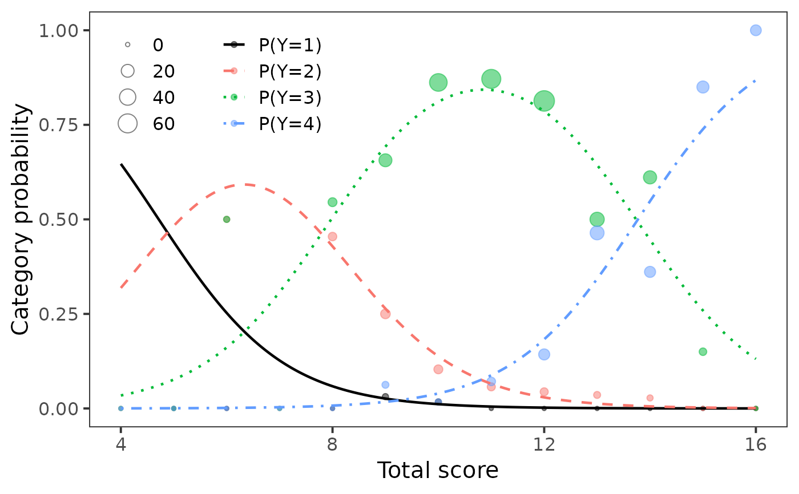

Plot cumulative and category probabilities of cumulative logit model
Source:R/plotCumulative.R
plotCumulative.RdFunction for plotting cumulative and category probabilities
function estimated by vglm() function from the VGAM package
using the ggplot2 package.
Author
Tomas Jurica
Institute of Computer Science of the Czech Academy
of Sciences
Adela Hladka
Institute of Computer Science of the Czech Academy of
Sciences
hladka@cs.cas.cz
Patricia Martinkova
Institute of Computer Science of the Czech Academy of
Sciences
martinkova@cs.cas.cz
Examples
# loading packages
library(VGAM)
# loading data
data(Science, package = "mirt")
# total score calculation
score <- rowSums(Science)
Science[, 1] <- factor(Science[, 1], levels = sort(unique(Science[, 1])), ordered = TRUE)
# cumulative logit model for item 1
fit <- vglm(Science[, 1] ~ score, family = cumulative(reverse = TRUE, parallel = TRUE))
# coefficients for item 1
coef(fit)
#> (Intercept):1 (Intercept):2 (Intercept):3 score
#> -3.9832567 -6.7069011 -11.6321394 0.8446536
plotCumulative(fit, type = "cumulative", matching.name = "Total score")

plotCumulative(fit, type = "category", matching.name = "Total score")
